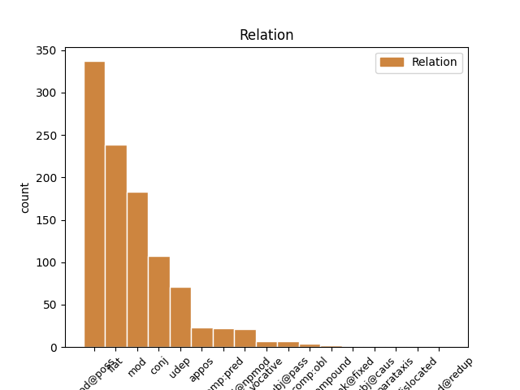
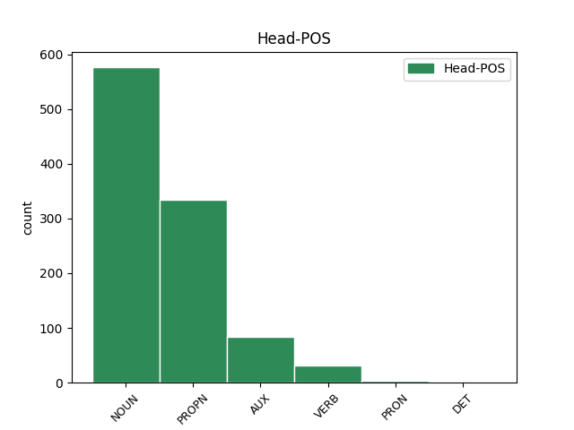
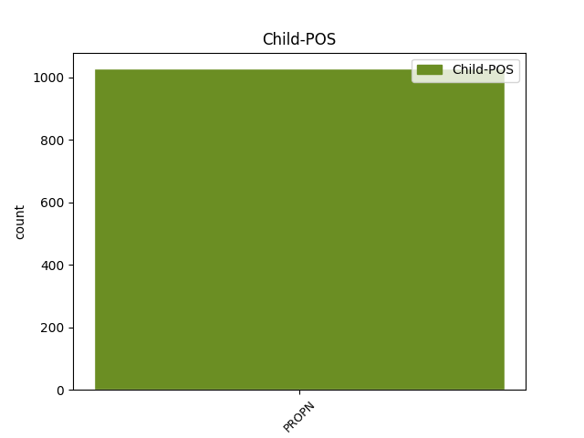

Distribution of features within this leaf



Agreement Rules sorted by frequency.
- When the dependent token is the modifer(mod@poss) of the head token, and the dependent token is PROPN.
1 2016 _ _ _ _ 0 _ _ _
2 թվականի _ _ _ _ 0 _ _ _
3 հունվարին _ _ _ _ 0 _ _ _
4 Մեծ _ _ _ _ 0 _ _ _
5 Սևանի Սևան PROPN _ Animacy=Nhum|Case=Dat|Definite=Ind|NameType=Geo|Number=Sing 6 mod@poss _ LTranslit=Sewan|Translit=Sewani
6 ծավալը ծավալ NOUN _ Animacy=Nhum|Case=Nom|Definite=Def|Number=Sing 0 _ _ _
7 կազմել _ _ _ _ 0 _ _ _
8 էր _ _ _ _ 0 _ _ _
9 23,83 _ _ _ _ 0 _ _ _
10 մլրդ _ _ _ _ 0 _ _ _
11 խմ _ _ _ _ 0 _ _ _
12 , _ _ _ _ 0 _ _ _
13 իսկ _ _ _ _ 0 _ _ _
14 Փոքր _ _ _ _ 0 _ _ _
15 Սևանինը _ _ _ _ 0 _ _ _
16 ` _ _ _ _ 0 _ _ _
17 13,99 _ _ _ _ 0 _ _ _
18 մլրդ _ _ _ _ 0 _ _ _
19 : _ _ _ _ 0 _ _ _
1 Հարցը _ _ _ _ 0 _ _ _
2 միայն _ _ _ _ 0 _ _ _
3 այն _ _ _ _ 0 _ _ _
4 է _ _ _ _ 0 _ _ _
5 , _ _ _ _ 0 _ _ _
6 թե _ _ _ _ 0 _ _ _
7 արդյոք _ _ _ _ 0 _ _ _
8 ընտրություններից _ _ _ _ 0 _ _ _
9 հետո _ _ _ _ 0 _ _ _
10 տեխնոկրատները _ _ _ _ 0 _ _ _
11 պետք _ _ _ _ 0 _ _ _
12 են _ _ _ _ 0 _ _ _
13 լինելու _ _ _ _ 0 _ _ _
14 Կարեն Կարեն PROPN _ Animacy=Hum|Case=Nom|Definite=Ind|NameType=Giv|Number=Sing 0 _ _ _
15 Կարապետյանին Կարապետյան PROPN _ Animacy=Hum|Case=Dat|Definite=Def|NameType=Sur|Number=Sing 14 flat _ LTranslit=Karapetyan|SpaceAfter=No|Translit=Karapetyanin
16 : _ _ _ _ 0 _ _ _
1 2017 _ _ _ _ 0 _ _ _
2 թվականի _ _ _ _ 0 _ _ _
3 հունվարին _ _ _ _ 0 _ _ _
4 Արփա Արփա PROPN _ Animacy=Nhum|Case=Nom|Definite=Ind|NameType=Geo|Number=Sing 7 mod _ LTranslit=Arp’a|SpaceAfter=No|Translit=Arp’a
5 - _ _ _ _ 0 _ _ _
6 Սևան _ _ _ _ 0 _ _ _
7 ջրատարով ջրատար NOUN _ Animacy=Nhum|Case=Ins|Definite=Ind|Number=Sing 0 _ _ _
8 Սևանա _ _ _ _ 0 _ _ _
9 լիճ _ _ _ _ 0 _ _ _
10 մուտք _ _ _ _ 0 _ _ _
11 գործած _ _ _ _ 0 _ _ _
12 ջրի _ _ _ _ 0 _ _ _
13 ծավալը _ _ _ _ 0 _ _ _
14 ( _ _ _ _ 0 _ _ _
15 ներառյալ _ _ _ _ 0 _ _ _
16 ջրատարի _ _ _ _ 0 _ _ _
17 հատվածքով _ _ _ _ 0 _ _ _
18 ստորերկրյա _ _ _ _ 0 _ _ _
19 ներհոսքը _ _ _ _ 0 _ _ _
20 ) _ _ _ _ 0 _ _ _
21 կազմել _ _ _ _ 0 _ _ _
22 է _ _ _ _ 0 _ _ _
23 2 _ _ _ _ 0 _ _ _
24 մլրդ _ _ _ _ 0 _ _ _
25 630 _ _ _ _ 0 _ _ _
26 մլն _ _ _ _ 0 _ _ _
27 խմ _ _ _ _ 0 _ _ _
28 , _ _ _ _ 0 _ _ _
29 իսկ _ _ _ _ 0 _ _ _
30 2016 _ _ _ _ 0 _ _ _
31 թվականի _ _ _ _ 0 _ _ _
32 հունվարին _ _ _ _ 0 _ _ _
33 այն _ _ _ _ 0 _ _ _
34 կազմել _ _ _ _ 0 _ _ _
35 էր _ _ _ _ 0 _ _ _
36 2 _ _ _ _ 0 _ _ _
37 մլրդ _ _ _ _ 0 _ _ _
38 471 _ _ _ _ 0 _ _ _
39 մլն _ _ _ _ 0 _ _ _
40 խմ _ _ _ _ 0 _ _ _
41 : _ _ _ _ 0 _ _ _
1 Զուգահեռ _ _ _ _ 0 _ _ _
2 քաղաքականությունից _ _ _ _ 0 _ _ _
3 դուրս _ _ _ _ 0 _ _ _
4 են _ _ _ _ 0 _ _ _
5 մղվում _ _ _ _ 0 _ _ _
6 այնպիսի _ _ _ _ 0 _ _ _
7 վտանգավոր _ _ _ _ 0 _ _ _
8 մրցակիցներ _ _ _ _ 0 _ _ _
9 , _ _ _ _ 0 _ _ _
10 ինչպիսիք _ _ _ _ 0 _ _ _
11 են _ _ _ _ 0 _ _ _
12 Հովիկ _ _ _ _ 0 _ _ _
13 Աբրահամյանը _ _ _ _ 0 _ _ _
14 , _ _ _ _ 0 _ _ _
15 Մհեր _ _ _ _ 0 _ _ _
16 Սեդրակյանը _ _ _ _ 0 _ _ _
17 , _ _ _ _ 0 _ _ _
18 Սուրիկ Սուրիկ PROPN _ Animacy=Hum|Case=Nom|Definite=Ind|NameType=Giv|Number=Sing 0 _ _ _
19 Խաչատրյանը _ _ _ _ 0 _ _ _
20 , _ _ _ _ 0 _ _ _
21 Գագիկ Գագիկ PROPN _ Animacy=Hum|Case=Nom|Definite=Ind|NameType=Giv|Number=Sing 18 conj _ LTranslit=Gagik|Translit=Gagik
22 Խաչատրյանը _ _ _ _ 0 _ _ _
23 : _ _ _ _ 0 _ _ _
1 ՀՀԿ-ում ՀՀԿ PROPN _ Abbr=Yes|Animacy=Nhum|Case=Loc|Definite=Ind|NameType=Com|Number=Sing 5 udep _ LTranslit=HHK|Translit=HHK-owm
2 երեք _ _ _ _ 0 _ _ _
3 պայմանական _ _ _ _ 0 _ _ _
4 թիմ _ _ _ _ 0 _ _ _
5 է եմ AUX _ Aspect=Imp|Mood=Ind|Number=Sing|Person=3|Polarity=Pos|Tense=Pres|VerbForm=Fin 0 _ _ _
6 ձևավորվել _ _ _ _ 0 _ _ _
7 , _ _ _ _ 0 _ _ _
8 և _ _ _ _ 0 _ _ _
9 նրանց _ _ _ _ 0 _ _ _
10 միջև _ _ _ _ 0 _ _ _
11 պայքարը _ _ _ _ 0 _ _ _
12 կարող _ _ _ _ 0 _ _ _
13 է _ _ _ _ 0 _ _ _
14 ավելի _ _ _ _ 0 _ _ _
15 կոշտ _ _ _ _ 0 _ _ _
16 լինել _ _ _ _ 0 _ _ _
17 , _ _ _ _ 0 _ _ _
18 քան _ _ _ _ 0 _ _ _
19 ընդդիմության _ _ _ _ 0 _ _ _
20 և _ _ _ _ 0 _ _ _
21 իշխանության _ _ _ _ 0 _ _ _
22 միջև _ _ _ _ 0 _ _ _
23 : _ _ _ _ 0 _ _ _
1 Արմեն _ _ _ _ 0 _ _ _
2 Աշոտյանը _ _ _ _ 0 _ _ _
3 , _ _ _ _ 0 _ _ _
4 որը _ _ _ _ 0 _ _ _
5 , _ _ _ _ 0 _ _ _
6 ըստ _ _ _ _ 0 _ _ _
7 մամուլի _ _ _ _ 0 _ _ _
8 , _ _ _ _ 0 _ _ _
9 կարող _ _ _ _ 0 _ _ _
10 է _ _ _ _ 0 _ _ _
11 խորհրդարանի _ _ _ _ 0 _ _ _
12 նախագահ _ _ _ _ 0 _ _ _
13 դառնալ _ _ _ _ 0 _ _ _
14 , _ _ _ _ 0 _ _ _
15 մեկնաբանելով _ _ _ _ 0 _ _ _
16 ՀՀԿ-ի _ _ _ _ 0 _ _ _
17 « _ _ _ _ 0 _ _ _
18 անվտանգություն _ _ _ _ 0 _ _ _
19 և _ _ _ _ 0 _ _ _
20 առաջընթաց _ _ _ _ 0 _ _ _
21 » _ _ _ _ 0 _ _ _
22 կարգախոսը _ _ _ _ 0 _ _ _
23 , _ _ _ _ 0 _ _ _
24 ասել _ _ _ _ 0 _ _ _
25 է _ _ _ _ 0 _ _ _
26 , _ _ _ _ 0 _ _ _
27 որ _ _ _ _ 0 _ _ _
28 « _ _ _ _ 0 _ _ _
29 առաջընթացը _ _ _ _ 0 _ _ _
30 » _ _ _ _ 0 _ _ _
31 ապահովելու _ _ _ _ 0 _ _ _
32 է _ _ _ _ 0 _ _ _
33 Կարեն _ _ _ _ 0 _ _ _
34 Կարապետյանի _ _ _ _ 0 _ _ _
35 կառավարությունը _ _ _ _ 0 _ _ _
36 , _ _ _ _ 0 _ _ _
37 իսկ _ _ _ _ 0 _ _ _
38 « _ _ _ _ 0 _ _ _
39 անվտանգության _ _ _ _ 0 _ _ _
40 » _ _ _ _ 0 _ _ _
41 մարմնավորումը _ _ _ _ 0 _ _ _
42 Սերժ Սերժ PROPN _ Animacy=Hum|Case=Nom|Definite=Ind|NameType=Giv|Number=Sing 44 comp:pred _ LTranslit=Serž|Translit=Serž
43 Սարգսյանն _ _ _ _ 0 _ _ _
44 է եմ AUX _ Aspect=Imp|Mood=Ind|Number=Sing|Person=3|Polarity=Pos|Tense=Pres|VerbForm=Fin 0 _ _ _
45 : _ _ _ _ 0 _ _ _
1 Օրինակ _ _ _ _ 0 _ _ _
2 , _ _ _ _ 0 _ _ _
3 « _ _ _ _ 0 _ _ _
4 դրական _ _ _ _ 0 _ _ _
5 սպասումների _ _ _ _ 0 _ _ _
6 » _ _ _ _ 0 _ _ _
7 ձևավորումը _ _ _ _ 0 _ _ _
8 ՝ _ _ _ _ 0 _ _ _
9 վարչապետի _ _ _ _ 0 _ _ _
10 Վրաստան _ _ _ _ 0 _ _ _
11 այցը _ _ _ _ 0 _ _ _
12 և _ _ _ _ 0 _ _ _
13 « _ _ _ _ 0 _ _ _
14 Լարսին Լարս PROPN _ Animacy=Nhum|Case=Dat|Definite=Def|NameType=Geo|Number=Sing 15 mod@npmod _ LTranslit=Lars|Translit=Larsin
15 այլընտրանքի այլընտրանք NOUN _ Animacy=Nhum|Case=Dat|Definite=Ind|Number=Sing 0 _ _ _
16 » _ _ _ _ 0 _ _ _
17 խոստումը _ _ _ _ 0 _ _ _
18 , _ _ _ _ 0 _ _ _
19 միլիարդների _ _ _ _ 0 _ _ _
20 ներդրումների _ _ _ _ 0 _ _ _
21 խոստումը _ _ _ _ 0 _ _ _
22 , _ _ _ _ 0 _ _ _
23 նախարարներին _ _ _ _ 0 _ _ _
24 հարյուրավոր _ _ _ _ 0 _ _ _
25 հանձնարարականները _ _ _ _ 0 _ _ _
26 : _ _ _ _ 0 _ _ _
1 Իսկ _ _ _ _ 0 _ _ _
2 ինձ _ _ _ _ 0 _ _ _
3 զարմացրեց _ _ _ _ 0 _ _ _
4 , _ _ _ _ 0 _ _ _
5 որ _ _ _ _ 0 _ _ _
6 հանձնաժողովը _ _ _ _ 0 _ _ _
7 մի _ _ _ _ 0 _ _ _
8 տարի _ _ _ _ 0 _ _ _
9 էլ _ _ _ _ 0 _ _ _
10 դիմադրեց _ _ _ _ 0 _ _ _
11 զանգվածային _ _ _ _ 0 _ _ _
12 մշակույթի մշակույթ NOUN _ Animacy=Nhum|Case=Dat|Definite=Ind|Number=Sing 0 _ _ _
13 ու _ _ _ _ 0 _ _ _
14 ճարպիկ _ _ _ _ 0 _ _ _
15 էպիգոնության _ _ _ _ 0 _ _ _
16 ՝ _ _ _ _ 0 _ _ _
17 Հարուկի Հարուկի PROPN _ Animacy=Hum|Case=Nom|Definite=Ind|NameType=Giv|Number=Sing 12 appos _ LTranslit=Harowki|Translit=Harowki
18 Մուրակամիի _ _ _ _ 0 _ _ _
19 հաղթանակին _ _ _ _ 0 _ _ _
20 ։ _ _ _ _ 0 _ _ _
1 Հիմա _ _ _ _ 0 _ _ _
2 այս _ _ _ _ 0 _ _ _
3 տեսակը _ _ _ _ 0 _ _ _
4 ոնց _ _ _ _ 0 _ _ _
5 ՞ _ _ _ _ 0 _ _ _
6 հանդուրժի _ _ _ _ 0 _ _ _
7 Արթուր Արթուր PROPN _ Animacy=Hum|Case=Nom|Definite=Ind|NameType=Giv|Number=Sing 10 subj@pass _ LTranslit=Art’owr|Translit=Art’owr
8 Սարգսյանի _ _ _ _ 0 _ _ _
9 մարդկային _ _ _ _ 0 _ _ _
10 հմայքը հմայք NOUN _ Animacy=Nhum|Case=Nom|Definite=Def|Number=Sing 0 _ _ _
11 : _ _ _ _ 0 _ _ _
1 Սեմ Սեմ PROPN _ Animacy=Hum|Case=Nom|Definite=Ind|NameType=Giv|Number=Sing 4 vocative _ LTranslit=Sem|Translit=Sem
2 ՛ _ _ _ _ 0 _ _ _
3 , _ _ _ _ 0 _ _ _
4 բաց բացել VERB _ Aspect=Prosp|Mood=Imp|Number=Sing|Person=2|Subcat=Tran|VerbForm=Fin|Voice=Act 0 _ _ _
5 ՛ _ _ _ _ 0 _ _ _
6 պատուհանը _ _ _ _ 0 _ _ _
7 ։ _ _ _ _ 0 _ _ _
1 Էլ _ _ _ _ 0 _ _ _
2 ով _ _ _ _ 0 _ _ _
3 ՞ _ _ _ _ 0 _ _ _
4 կհամարձակվեր _ _ _ _ 0 _ _ _
5 Հարութին Հարութ PROPN _ Animacy=Hum|Case=Dat|Definite=Def|NameType=Giv|Number=Sing 8 comp:obl _ LTranslit=Harowt’|Translit=Harowt’in
6 երկրորդ _ _ _ _ 0 _ _ _
7 հարցը _ _ _ _ 0 _ _ _
8 տար տալ VERB _ Aspect=Prosp|Mood=Sub|Number=Sing|Person=3|Polarity=Pos|Subcat=Tran|Tense=Imp|VerbForm=Fin|Voice=Act 0 _ _ _
9 կամ _ _ _ _ 0 _ _ _
10 հաշիվ _ _ _ _ 0 _ _ _
11 պահանջեր _ _ _ _ 0 _ _ _
12 ։ _ _ _ _ 0 _ _ _
1 2017 _ _ _ _ 0 _ _ _
2 թվականի _ _ _ _ 0 _ _ _
3 հունվարին _ _ _ _ 0 _ _ _
4 Արփա Արփա PROPN _ Animacy=Nhum|Case=Nom|Definite=Ind|NameType=Geo|Number=Sing 0 _ _ _
5 - _ _ _ _ 0 _ _ _
6 Սևան Սևան PROPN _ Animacy=Nhum|Case=Nom|Definite=Ind|NameType=Geo|Number=Sing 4 compound _ LTranslit=Sewan|Translit=Sewan
7 ջրատարով _ _ _ _ 0 _ _ _
8 Սևանա _ _ _ _ 0 _ _ _
9 լիճ _ _ _ _ 0 _ _ _
10 մուտք _ _ _ _ 0 _ _ _
11 գործած _ _ _ _ 0 _ _ _
12 ջրի _ _ _ _ 0 _ _ _
13 ծավալը _ _ _ _ 0 _ _ _
14 ( _ _ _ _ 0 _ _ _
15 ներառյալ _ _ _ _ 0 _ _ _
16 ջրատարի _ _ _ _ 0 _ _ _
17 հատվածքով _ _ _ _ 0 _ _ _
18 ստորերկրյա _ _ _ _ 0 _ _ _
19 ներհոսքը _ _ _ _ 0 _ _ _
20 ) _ _ _ _ 0 _ _ _
21 կազմել _ _ _ _ 0 _ _ _
22 է _ _ _ _ 0 _ _ _
23 2 _ _ _ _ 0 _ _ _
24 մլրդ _ _ _ _ 0 _ _ _
25 630 _ _ _ _ 0 _ _ _
26 մլն _ _ _ _ 0 _ _ _
27 խմ _ _ _ _ 0 _ _ _
28 , _ _ _ _ 0 _ _ _
29 իսկ _ _ _ _ 0 _ _ _
30 2016 _ _ _ _ 0 _ _ _
31 թվականի _ _ _ _ 0 _ _ _
32 հունվարին _ _ _ _ 0 _ _ _
33 այն _ _ _ _ 0 _ _ _
34 կազմել _ _ _ _ 0 _ _ _
35 էր _ _ _ _ 0 _ _ _
36 2 _ _ _ _ 0 _ _ _
37 մլրդ _ _ _ _ 0 _ _ _
38 471 _ _ _ _ 0 _ _ _
39 մլն _ _ _ _ 0 _ _ _
40 խմ _ _ _ _ 0 _ _ _
41 : _ _ _ _ 0 _ _ _
1 Իսկ _ _ _ _ 0 _ _ _
2 իր _ _ _ _ 0 _ _ _
3 անունից _ _ _ _ 0 _ _ _
4 խորշում _ _ _ _ 0 _ _ _
5 էր եմ AUX _ Aspect=Imp|Mood=Ind|Number=Sing|Person=3|Polarity=Pos|Tense=Imp|VerbForm=Fin 0 _ _ _
6 ՝ _ _ _ _ 0 _ _ _
7 Ակաթ Ակաթ PROPN _ Animacy=Hum|Case=Nom|Definite=Ind|NameType=Giv|Number=Sing 5 dislocated _ LTranslit=Akat’|Translit=Akat’
8 ՜ _ _ _ _ 0 _ _ _
9 ։ _ _ _ _ 0 _ _ _
1 Էդպես _ _ _ _ 0 _ _ _
2 վերացնում _ _ _ _ 0 _ _ _
3 էինք _ _ _ _ 0 _ _ _
4 Գումբա _ _ _ _ 0 _ _ _
5 սնկերին _ _ _ _ 0 _ _ _
6 , _ _ _ _ 0 _ _ _
7 իսկ _ _ _ _ 0 _ _ _
8 Կուպա _ _ _ _ 0 _ _ _
9 կրիաները _ _ _ _ 0 _ _ _
10 միառժամանակ _ _ _ _ 0 _ _ _
11 սառչում _ _ _ _ 0 _ _ _
12 էին _ _ _ _ 0 _ _ _
13 իրենց _ _ _ _ 0 _ _ _
14 պատյաններում _ _ _ _ 0 _ _ _
15 , _ _ _ _ 0 _ _ _
16 բայց _ _ _ _ 0 _ _ _
17 կային _ _ _ _ 0 _ _ _
18 և _ _ _ _ 0 _ _ _
19 էնպիսիք _ _ _ _ 0 _ _ _
20 , _ _ _ _ 0 _ _ _
21 որոնց _ _ _ _ 0 _ _ _
22 գլխին _ _ _ _ 0 _ _ _
23 թռչել _ _ _ _ 0 _ _ _
24 չէր _ _ _ _ 0 _ _ _
25 կարելի _ _ _ _ 0 _ _ _
26 , _ _ _ _ 0 _ _ _
27 ասենք _ _ _ _ 0 _ _ _
28 , _ _ _ _ 0 _ _ _
29 Սփինի _ _ _ _ 0 _ _ _
30 վայրենակերպերը _ _ _ _ 0 _ _ _
31 կամ _ _ _ _ 0 _ _ _
32 ջրաշխարհում _ _ _ _ 0 _ _ _
33 հանդիպող _ _ _ _ 0 _ _ _
34 Ծիպ Ծիպ PROPN _ Animacy=Hum|Case=Nom|Definite=Ind|NameType=Prs|Number=Sing 0 _ _ _
35 - _ _ _ _ 0 _ _ _
36 ծիպ Ծիպ PROPN _ Animacy=Hum|Case=Nom|Definite=Ind|NameType=Prs|Number=Sing 34 compound@redup _ LTranslit=Çip|Translit=çip
37 ձկները _ _ _ _ 0 _ _ _
38 , _ _ _ _ 0 _ _ _
39 ու _ _ _ _ 0 _ _ _
40 հատկապես _ _ _ _ 0 _ _ _
41 անդուր _ _ _ _ 0 _ _ _
42 էին _ _ _ _ 0 _ _ _
43 Համեր _ _ _ _ 0 _ _ _
44 ախպերները _ _ _ _ 0 _ _ _
45 , _ _ _ _ 0 _ _ _
46 որ _ _ _ _ 0 _ _ _
47 մուրճեր _ _ _ _ 0 _ _ _
48 էին _ _ _ _ 0 _ _ _
49 նետում _ _ _ _ 0 _ _ _
50 մեզ _ _ _ _ 0 _ _ _
51 վրա _ _ _ _ 0 _ _ _
52 ։ _ _ _ _ 0 _ _ _
1 Շատ _ _ _ _ 0 _ _ _
2 էլ _ _ _ _ 0 _ _ _
3 թե _ _ _ _ 0 _ _ _
4 Մարտին Մարտին PROPN _ Animacy=Hum|Case=Nom|Definite=Ind|NameType=Giv|Number=Sing 0 _ _ _
5 Սահակյանը Սահակյան PROPN _ Animacy=Hum|Case=Nom|Definite=Def|NameType=Sur|Number=Sing 4 unk@fixed _ LTranslit=Sahakyan|SpaceAfter=No|Translit=Sahakyanë
6 , _ _ _ _ 0 _ _ _
7 մորից _ _ _ _ 0 _ _ _
8 , _ _ _ _ 0 _ _ _
9 տատից _ _ _ _ 0 _ _ _
10 և _ _ _ _ 0 _ _ _
11 էլ _ _ _ _ 0 _ _ _
12 չգիտենք _ _ _ _ 0 _ _ _
13 թե _ _ _ _ 0 _ _ _
14 ումից _ _ _ _ 0 _ _ _
15 ժառանգած _ _ _ _ 0 _ _ _
16 իր _ _ _ _ 0 _ _ _
17 մի _ _ _ _ 0 _ _ _
18 քիչ _ _ _ _ 0 _ _ _
19 անկախ _ _ _ _ 0 _ _ _
20 , _ _ _ _ 0 _ _ _
21 մի _ _ _ _ 0 _ _ _
22 քիչ _ _ _ _ 0 _ _ _
23 արհամարհական _ _ _ _ 0 _ _ _
24 կեցվածքը _ _ _ _ 0 _ _ _
25 հիմա _ _ _ _ 0 _ _ _
26 էլ _ _ _ _ 0 _ _ _
27 էր _ _ _ _ 0 _ _ _
28 պահպանում _ _ _ _ 0 _ _ _
29 , _ _ _ _ 0 _ _ _
30 շատ _ _ _ _ 0 _ _ _
31 էլ _ _ _ _ 0 _ _ _
32 թե _ _ _ _ 0 _ _ _
33 նրա _ _ _ _ 0 _ _ _
34 ուղեկցուհին _ _ _ _ 0 _ _ _
35 քայլում _ _ _ _ 0 _ _ _
36 էր _ _ _ _ 0 _ _ _
37 երիտասարդ _ _ _ _ 0 _ _ _
38 , _ _ _ _ 0 _ _ _
39 իր _ _ _ _ 0 _ _ _
40 հմայքների _ _ _ _ 0 _ _ _
41 գինն _ _ _ _ 0 _ _ _
42 իմացող _ _ _ _ 0 _ _ _
43 կնոջ _ _ _ _ 0 _ _ _
44 ինքնավստահությամբ _ _ _ _ 0 _ _ _
45 և _ _ _ _ 0 _ _ _
46 գեղեցիկ _ _ _ _ 0 _ _ _
47 գլուխը _ _ _ _ 0 _ _ _
48 ոչ _ _ _ _ 0 _ _ _
49 մի _ _ _ _ 0 _ _ _
50 անգամ _ _ _ _ 0 _ _ _
51 չթեքեց _ _ _ _ 0 _ _ _
52 մեր _ _ _ _ 0 _ _ _
53 միամիտ _ _ _ _ 0 _ _ _
54 , _ _ _ _ 0 _ _ _
55 քաղքենի _ _ _ _ 0 _ _ _
56 , _ _ _ _ 0 _ _ _
57 սնապարծ _ _ _ _ 0 _ _ _
58 ու _ _ _ _ 0 _ _ _
59 բարեհոգի _ _ _ _ 0 _ _ _
60 տների _ _ _ _ 0 _ _ _
61 կողմը _ _ _ _ 0 _ _ _
62 , _ _ _ _ 0 _ _ _
63 նրանց _ _ _ _ 0 _ _ _
64 վրա _ _ _ _ 0 _ _ _
65 խարան _ _ _ _ 0 _ _ _
66 կար _ _ _ _ 0 _ _ _
67 , _ _ _ _ 0 _ _ _
68 ինչ _ _ _ _ 0 _ _ _
69 - _ _ _ _ 0 _ _ _
70 որ _ _ _ _ 0 _ _ _
71 բանը _ _ _ _ 0 _ _ _
72 իր _ _ _ _ 0 _ _ _
73 հետքը _ _ _ _ 0 _ _ _
74 թողել _ _ _ _ 0 _ _ _
75 էր _ _ _ _ 0 _ _ _
76 նրանց _ _ _ _ 0 _ _ _
77 վրա _ _ _ _ 0 _ _ _
78 ։ _ _ _ _ 0 _ _ _
1 Կանանցից _ _ _ _ 0 _ _ _
2 երկուսը _ _ _ _ 0 _ _ _
3 նրա _ _ _ _ 0 _ _ _
4 թևերն _ _ _ _ 0 _ _ _
5 ընկած _ _ _ _ 0 _ _ _
6 քռքաշ _ _ _ _ 0 _ _ _
7 տարան _ _ _ _ 0 _ _ _
8 տուն _ _ _ _ 0 _ _ _
9 , _ _ _ _ 0 _ _ _
10 իսկ _ _ _ _ 0 _ _ _
11 պատշարի _ _ _ _ 0 _ _ _
12 կնիկ _ _ _ _ 0 _ _ _
13 Բավականը Բավական PROPN _ Animacy=Hum|Case=Nom|Definite=Def|NameType=Giv|Number=Sing 23 subj@caus _ LTranslit=Bavakan|Translit=Bavakanë
14 մի _ _ _ _ 0 _ _ _
15 քանիսին _ _ _ _ 0 _ _ _
16 , _ _ _ _ 0 _ _ _
17 այդ _ _ _ _ 0 _ _ _
18 թվում _ _ _ _ 0 _ _ _
19 և _ _ _ _ 0 _ _ _
20 Սաթոյին _ _ _ _ 0 _ _ _
21 , _ _ _ _ 0 _ _ _
22 աչքունքով _ _ _ _ 0 _ _ _
23 հասկացրեց հասկանալ VERB _ Aspect=Perf|Mood=Ind|Number=Sing|Person=3|Polarity=Pos|Subcat=Tran|Tense=Past|VerbForm=Fin|Voice=Cau 0 _ _ _
24 , _ _ _ _ 0 _ _ _
25 որ _ _ _ _ 0 _ _ _
26 իր _ _ _ _ 0 _ _ _
27 հետևից _ _ _ _ 0 _ _ _
28 գնան _ _ _ _ 0 _ _ _
29 ։ _ _ _ _ 0 _ _ _
1 Իրանի _ _ _ _ 0 _ _ _
2 Անվտանգության _ _ _ _ 0 _ _ _
3 բարձրագույն _ _ _ _ 0 _ _ _
4 խորհրդի _ _ _ _ 0 _ _ _
5 ներկայացուցիչների _ _ _ _ 0 _ _ _
6 գնահատականով _ _ _ _ 0 _ _ _
7 , _ _ _ _ 0 _ _ _
8 « _ _ _ _ 0 _ _ _
9 Ի _ _ _ _ 0 _ _ _
10 տարբերություն _ _ _ _ 0 _ _ _
11 Ռուսաստանի _ _ _ _ 0 _ _ _
12 , _ _ _ _ 0 _ _ _
13 որը _ _ _ _ 0 _ _ _
14 մշտապես _ _ _ _ 0 _ _ _
15 շփոթվածություն _ _ _ _ 0 _ _ _
16 է եմ AUX _ Aspect=Imp|Mood=Ind|Number=Sing|Person=3|Polarity=Pos|Tense=Pres|VerbForm=Fin 0 _ _ _
17 ցուցաբերում _ _ _ _ 0 _ _ _
18 արտաքին _ _ _ _ 0 _ _ _
19 քաղաքականության _ _ _ _ 0 _ _ _
20 մեջ _ _ _ _ 0 _ _ _
21 , _ _ _ _ 0 _ _ _
22 հատկապես _ _ _ _ 0 _ _ _
23 Կովկասում Կովկաս PROPN _ Animacy=Nhum|Case=Loc|Definite=Ind|NameType=Geo|Number=Sing 16 parataxis _ LTranslit=Kovkas|SpaceAfter=No|Translit=Kovkasowm
24 , _ _ _ _ 0 _ _ _
25 Իրանը _ _ _ _ 0 _ _ _
26 տարածաշրջանում _ _ _ _ 0 _ _ _
27 ամերիկյան _ _ _ _ 0 _ _ _
28 ռազմական _ _ _ _ 0 _ _ _
29 ներկայությունը _ _ _ _ 0 _ _ _
30 չի _ _ _ _ 0 _ _ _
31 դիտարկում _ _ _ _ 0 _ _ _
32 որպես _ _ _ _ 0 _ _ _
33 երկարաժամկետ _ _ _ _ 0 _ _ _
34 գործոն _ _ _ _ 0 _ _ _
35 , _ _ _ _ 0 _ _ _
36 եթե _ _ _ _ 0 _ _ _
37 նույնիսկ _ _ _ _ 0 _ _ _
38 նկատի _ _ _ _ 0 _ _ _
39 է _ _ _ _ 0 _ _ _
40 առնվում _ _ _ _ 0 _ _ _
41 20 _ _ _ _ 0 _ _ _
42 տարին _ _ _ _ 0 _ _ _
43 : _ _ _ _ 0 _ _ _
Disagree Examples:
1 Ես _ _ _ _ 0 _ _ _
2 Հիսուսն Հիսուս PROPN _ Animacy=Hum|Case=Nom|Definite=Def|NameType=Giv|Number=Coll 3 comp:pred _ LTranslit=Hisows|Translit=Hisowsn
3 եմ եմ AUX _ Aspect=Imp|Mood=Ind|Number=Sing|Person=1|Polarity=Pos|Tense=Pres|VerbForm=Fin 0 _ _ _
4 , _ _ _ _ 0 _ _ _
5 ունեցածդ _ _ _ _ 0 _ _ _
6 թափի _ _ _ _ 0 _ _ _
7 , _ _ _ _ 0 _ _ _
8 իմ _ _ _ _ 0 _ _ _
9 ետևից _ _ _ _ 0 _ _ _
10 արի _ _ _ _ 0 _ _ _
11 ՛ _ _ _ _ 0 _ _ _
12 ... _ _ _ _ 0 _ _ _
1 Նրա _ _ _ _ 0 _ _ _
2 կամքն _ _ _ _ 0 _ _ _
3 ու _ _ _ _ 0 _ _ _
4 ցանկությունները _ _ _ _ 0 _ _ _
5 լույս _ _ _ _ 0 _ _ _
6 աշխարհ _ _ _ _ 0 _ _ _
7 եկան _ _ _ _ 0 _ _ _
8 ( _ _ _ _ 0 _ _ _
9 այսինքն _ _ _ _ 0 _ _ _
10 ՝ _ _ _ _ 0 _ _ _
11 այդպես _ _ _ _ 0 _ _ _
12 էր _ _ _ _ 0 _ _ _
13 հիշում _ _ _ _ 0 _ _ _
14 Արմինուսը _ _ _ _ 0 _ _ _
15 ) _ _ _ _ 0 _ _ _
16 Եդեսիայի Եդեսիա PROPN _ Animacy=Nhum|Case=Dat|Definite=Ind|NameType=Geo|Number=Sing 17 mod@poss _ LTranslit=Edesia|Translit=Edesiayi
17 ետնաորջերի ետնաորջ NOUN _ Animacy=Nhum|Case=Dat|Definite=Ind|Number=Plur 0 _ _ _
18 խուլ _ _ _ _ 0 _ _ _
19 անկյուններում _ _ _ _ 0 _ _ _
20 ։ _ _ _ _ 0 _ _ _
1 Նա _ _ _ _ 0 _ _ _
2 գրկեց _ _ _ _ 0 _ _ _
3 Լուկրեցիայի Լուկրեցիա PROPN _ Animacy=Hum|Case=Dat|Definite=Ind|NameType=Giv|Number=Sing 4 mod@poss _ LTranslit=Lowkrec’ia|Translit=Lowkrec’iayi
4 ծնկները ծունկ NOUN _ Animacy=Nhum|Case=Nom|Definite=Def|Number=Plur 0 _ _ _
5 , _ _ _ _ 0 _ _ _
6 ու _ _ _ _ 0 _ _ _
7 արթնացան _ _ _ _ 0 _ _ _
8 ոտքերը _ _ _ _ 0 _ _ _
9 և _ _ _ _ 0 _ _ _
10 փարվեցին _ _ _ _ 0 _ _ _
11 նրան _ _ _ _ 0 _ _ _
12 , _ _ _ _ 0 _ _ _
13 և _ _ _ _ 0 _ _ _
14 փոքրիկ _ _ _ _ 0 _ _ _
15 Արմինուսը _ _ _ _ 0 _ _ _
16 տեսավ _ _ _ _ 0 _ _ _
17 Լուկրեցիայի _ _ _ _ 0 _ _ _
18 դեմքը _ _ _ _ 0 _ _ _
19 ՝ _ _ _ _ 0 _ _ _
20 աչքերը _ _ _ _ 0 _ _ _
21 չռած _ _ _ _ 0 _ _ _
22 , _ _ _ _ 0 _ _ _
23 ու _ _ _ _ 0 _ _ _
24 խենթ _ _ _ _ 0 _ _ _
25 պագշանքը _ _ _ _ 0 _ _ _
26 նրա _ _ _ _ 0 _ _ _
27 թոշնած _ _ _ _ 0 _ _ _
28 շուրթերին _ _ _ _ 0 _ _ _
29 ։ _ _ _ _ 0 _ _ _
1 Մանկությունն _ _ _ _ 0 _ _ _
2 անցավ _ _ _ _ 0 _ _ _
3 Եդեսիայի Եդեսիա PROPN _ Animacy=Nhum|Case=Dat|Definite=Ind|NameType=Geo|Number=Sing 4 mod@poss _ LTranslit=Edesia|Translit=Edesiayi
4 փողոցներում փողոց NOUN _ Animacy=Nhum|Case=Loc|Definite=Ind|Number=Plur 0 _ _ _
5 , _ _ _ _ 0 _ _ _
6 քնում _ _ _ _ 0 _ _ _
7 էր _ _ _ _ 0 _ _ _
8 այստեղ _ _ _ _ 0 _ _ _
9 ու _ _ _ _ 0 _ _ _
10 այնտեղ _ _ _ _ 0 _ _ _
11 , _ _ _ _ 0 _ _ _
12 որտեղ _ _ _ _ 0 _ _ _
13 ուտելիք _ _ _ _ 0 _ _ _
14 կար _ _ _ _ 0 _ _ _
15 և _ _ _ _ 0 _ _ _
16 մարդու _ _ _ _ 0 _ _ _
17 մարմին _ _ _ _ 0 _ _ _
18 ։ _ _ _ _ 0 _ _ _
1 Վերադառնանք _ _ _ _ 0 _ _ _
2 ձկանը _ _ _ _ 0 _ _ _
3 ... _ _ _ _ 0 _ _ _
4 խեղճ _ _ _ _ 0 _ _ _
5 ձուկը _ _ _ _ 0 _ _ _
6 ցեխի _ _ _ _ 0 _ _ _
7 մեջ _ _ _ _ 0 _ _ _
8 լռված _ _ _ _ 0 _ _ _
9 խռխռացնում _ _ _ _ 0 _ _ _
10 էր _ _ _ _ 0 _ _ _
11 , _ _ _ _ 0 _ _ _
12 տանջվում _ _ _ _ 0 _ _ _
13 ջրի _ _ _ _ 0 _ _ _
14 պակասից _ _ _ _ 0 _ _ _
15 ու _ _ _ _ 0 _ _ _
16 , _ _ _ _ 0 _ _ _
17 առավել _ _ _ _ 0 _ _ _
18 ՝ _ _ _ _ 0 _ _ _
19 խղճի _ _ _ _ 0 _ _ _
20 խայթից _ _ _ _ 0 _ _ _
21 , _ _ _ _ 0 _ _ _
22 քանի _ _ _ _ 0 _ _ _
23 որ _ _ _ _ 0 _ _ _
24 միտն _ _ _ _ 0 _ _ _
25 եկել _ _ _ _ 0 _ _ _
26 էր _ _ _ _ 0 _ _ _
27 , _ _ _ _ 0 _ _ _
28 որ _ _ _ _ 0 _ _ _
29 գեղցուն _ _ _ _ 0 _ _ _
30 մոռացել _ _ _ _ 0 _ _ _
31 էր _ _ _ _ 0 _ _ _
32 զգուշացնի _ _ _ _ 0 _ _ _
33 , _ _ _ _ 0 _ _ _
34 թե _ _ _ _ 0 _ _ _
35 երեք _ _ _ _ 0 _ _ _
36 ցանկությունների _ _ _ _ 0 _ _ _
37 ազդեցությունը _ _ _ _ 0 _ _ _
38 կես _ _ _ _ 0 _ _ _
39 բյուր _ _ _ _ 0 _ _ _
40 օր _ _ _ _ 0 _ _ _
41 է _ _ _ _ 0 _ _ _
42 ( _ _ _ _ 0 _ _ _
43 ի _ _ _ _ 0 _ _ _
44 վերջո _ _ _ _ 0 _ _ _
45 էներգիայի _ _ _ _ 0 _ _ _
46 պահպանման _ _ _ _ 0 _ _ _
47 օրենքը _ _ _ _ 0 _ _ _
48 նույնիսկ _ _ _ _ 0 _ _ _
49 Նեպտունի Նեպտուն PROPN _ Animacy=Hum|Case=Dat|Definite=Ind|NameType=Prs|Number=Sing 50 mod@poss _ LTranslit=Neptown|Translit=Neptowni
50 ժառանգները ժառանգ NOUN _ Animacy=Hum|Case=Nom|Definite=Def|Number=Plur 0 _ _ _
51 չեն _ _ _ _ 0 _ _ _
52 կարող _ _ _ _ 0 _ _ _
53 փոխել _ _ _ _ 0 _ _ _
54 ) _ _ _ _ 0 _ _ _
55 , _ _ _ _ 0 _ _ _
56 ինչից _ _ _ _ 0 _ _ _
57 հետո _ _ _ _ 0 _ _ _
58 կառքն _ _ _ _ 0 _ _ _
59 էլի _ _ _ _ 0 _ _ _
60 տաշտակ _ _ _ _ 0 _ _ _
61 է _ _ _ _ 0 _ _ _
62 դառնալու _ _ _ _ 0 _ _ _
63 , _ _ _ _ 0 _ _ _
64 թիկնապահները _ _ _ _ 0 _ _ _
65 ՝ _ _ _ _ 0 _ _ _
66 հավ _ _ _ _ 0 _ _ _
67 , _ _ _ _ 0 _ _ _
68 վեզիրն _ _ _ _ 0 _ _ _
69 էլ _ _ _ _ 0 _ _ _
70 ՝ _ _ _ _ 0 _ _ _
71 դդում _ _ _ _ 0 _ _ _
72 ։ _ _ _ _ 0 _ _ _